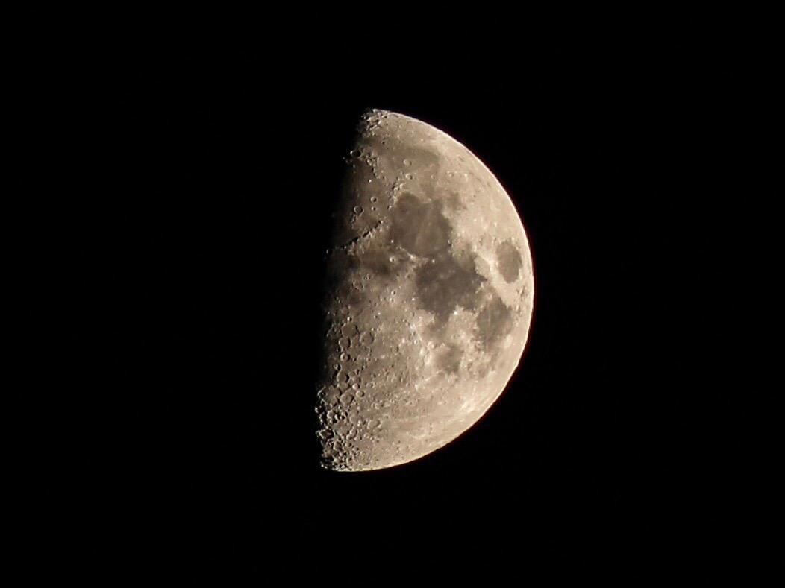
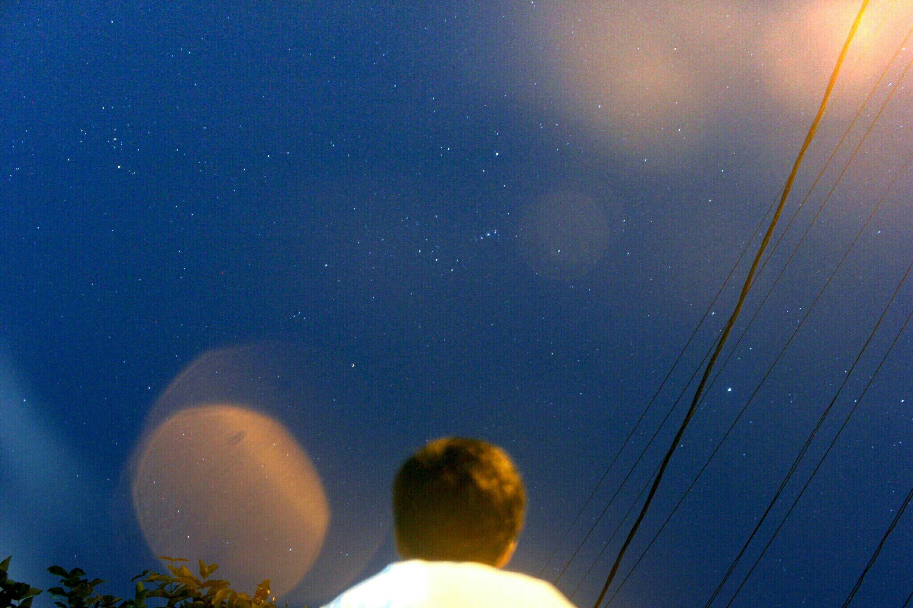

Astrofotografi sebagai hobi

Sebuah hobi yang menjadi kehidupan seorang Raihan Sultan
Profile Penulis: Raihan Sultan
Profile Penulis: Raihan Sultan
Mengenal Astronomi
Sejak lama manusia sudah memiliki rasa penasaran akan kosmik luar ansgkasa, dan sudah sejak lama juga manusia telah mencoba untuk menemukan keberadaannya di Alam Semesta yang tak terhingga ini. Manusia mulai mempelajari mengenai sistem bintang, sistem keplanetan, dan mempelajari keberadaannya, sebuah perjalanan yang panjang melewati ribuan tahun dan banyak peradaban untuk menggali lebih banyak mengenai alam semesta ini. Memasuki era abad pertengahan, astronomi tidak hanya dipelajari sebagai penunjuk arah dan waktu saja, tapi juga mulai dipelajari bagaimana mereka hidup, bagaimana mereka bekerja, dan bagaimana mereka berinteraksi dengan benda angkasa lainnya. Salah satunya adalah Galileo yang merupakan pengguna optik pertama sebagai kacamata untuk melihat kosmik dari perspektif lainnya.
Cabang Astronomi
Maju semakin kedepan, perhitungan akan astrofisika, kosmologi, astrobiologi, dan banyak field astronomi lainnya semakin berkembang, sebuah kemajuan hebat dalam dunia sains ketika manusia akhirnya mulai menyadari keberadaannya di alam semesta ini. Memasuki awal abad ke-20, muncul lah sebuah bidang baru yakni astrodinamika dan juga roket propeler, dimana pada akhirnya manusia tidak hanya bisa terbang di langit, melainkan juga bisa terbang melewati atmosfer bumi, menuju ruang angkasa kedap udara, dan mengamati langit dengan lebih seksama, dengan munculnya roket-roket ini, muncul juga ide untuk menempatkan teleskop di luar angkasa, faktor yang mendukungnya adalah dikarenakan teleskop bumi memerlukan waktu khusus
dalam mengamati objek langit, sedangkan teleskop yang berada di luar angkasa akan lebih praktis dan simple.

Mengenal Astrofotografi
Astrofotografi merupakan salah satu cabang dari Astronomi dan juga Fotografi. Astrofotografi adalah sebuah jenis khusus dari fotografi yang memerlukan gambar pencatatan objek astronomi dan daerah besar di langit malam. Foto pertama dari objek astronomi (Bulan) diambil pada tahun 1840, tetapi tidak sampai akhir abad ke-19 bahwa kemajuan teknologi memungkinkan untuk fotografi bintang yang lebih rinci. Selain mampu merekam secara detail benda seperti Bulan, Matahari, dan planet-planet, astrophotography memiliki kemampuan untuk merekam objek gambar tidak terlihat oleh mata manusia seperti bintang redup, nebula, dan galaksi. Hal ini dilakukan oleh paparan lama sejak kedua film dan kamera digital dapat menumpuk dan jumlah foton cahaya selama ini jangka waktu yang lama. Dalam penelitian astronomi profesional, fotografi merevolusi lapangan, dengan eksposur lama merekam ratusan ribu bintang baru dan nebula yang tak terlihat oleh mata manusia, yang mengarah ke teleskop optik khusus dan semakin besar yang pada dasarnya besar "kamera" yang dirancang untuk mengumpulkan cahaya untuk direkam pada film. Astrophotography langsung memiliki peran awal dalam survei langit dan klasifikasi bintang tetapi seiring waktu itu telah memberikan cara untuk peralatan yang lebih canggih dan teknik yang dirancang untuk bidang tertentu penelitian ilmiah, dengan film (dan kemudian astronomi kamera CCD) menjadi hanya salah satu dari banyak bentuk sensor.

Astrophotography adalah sub-disiplin besar dalam astronomi amatir di mana biasanya digunakan untuk merekam gambar estetis, bukan untuk penelitian ilmiah, dengan berbagai macam peralatan dan teknik yang didedikasikan untuk kegiatan tersebut.
Astrofotgrafi yang akhirnya menjadi hobi
Sebuah hal yang sangat momentum dalam hidup saya, pada dasarnya setiap anak laki-laki akan memiliki passionnya masing-masing, kebanyakan dari mereka akan berkutat di Kendaraan, Konstruksi, Dinosaurus, dan Lain sebagainya. Ketika saya memasuki usia SMP, saya mendapati diri saya sedang berbaring di bawah langit malam, saya mengamati bahwa ketika langit malam kita lihat secara detail, maka keindahan yang sering terlewat pada akhirnya akan kita bisa nikmati. Saya menyukai astronomi semenjak itu, bergabung bersama komunitas astronomi, dan mempelajari lebih dalam mengenai bidang ini, saya juga mulai mengikuti olimpiade astronomi terutama di masa SMA.
Saya mulai mendalami Astrofotografi ketika pertengahan usia SMP, kala itu saya mencoba menggunakan kamera DSLR saya dengan lensa Tele seadanya, dengan menggunakan teknik zoom in gambar, dan memfokuskan pada objek langit secara manual, Voila!, foto pertamaku adalah sebuah potret bulan. Semakin kedepan, aku mulai membiasakan diri untuk memotret objek langit, aku mendapatkan juga foto Galaksi Bima Sakti pertamaku, Foto Nebula Orion yang berada di sabuk Rasi Orion, Timelapse gerhana bulan, dan masih banyak lagi. Sebuah kepuasan jika kita bisa memotret langit malam itu dengan usaha kita sendiri.
 
Computer Science | ESQ Business School
Raihan Sultan Pasha Basuki, 2022 ©
Website: esqbs.ac.id
Instagram: @esqbusinessschool
Facebook: ESQ Business School
Youtube: ESQ Business School